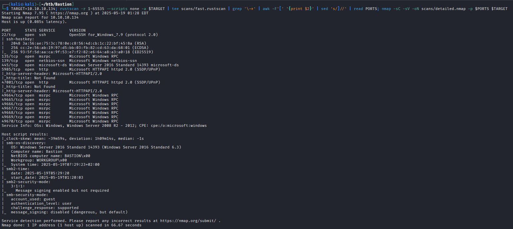
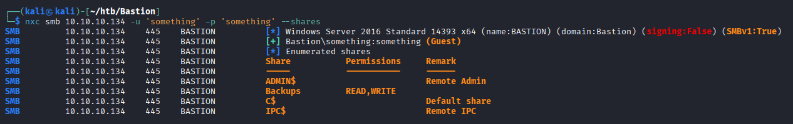
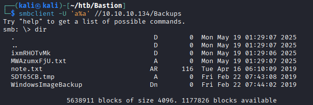
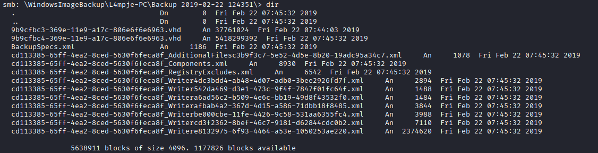
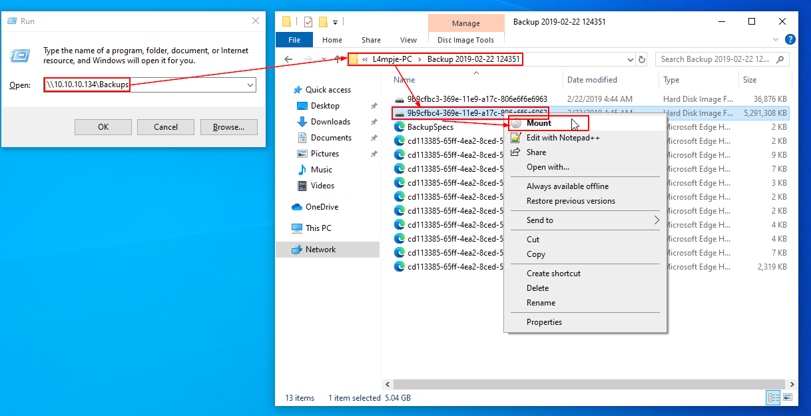
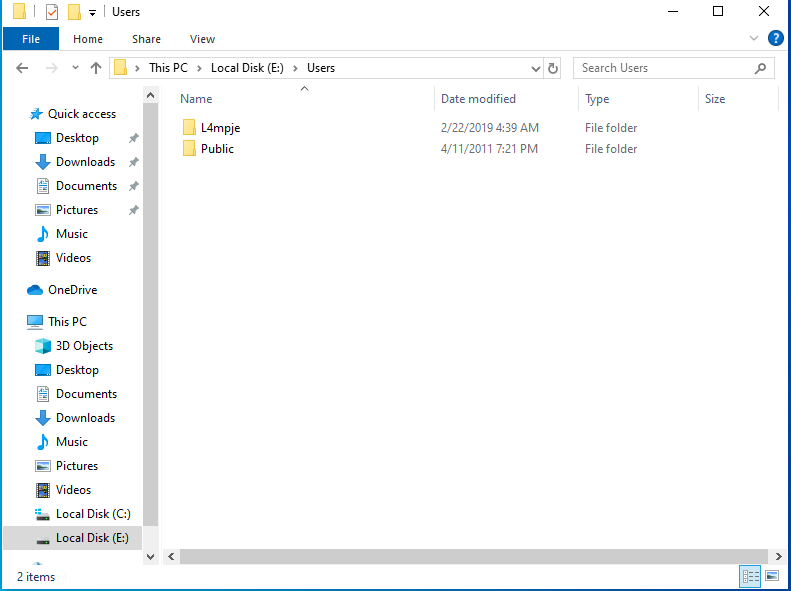

Enumeration
Scan
Starting off by scanning with rustscan and nmap
TARGET=10.10.10.134; rustscan -r 1-65535 --scripts none -a $TARGET | tee scans/fast.rustscan | grep '\->' | awk -F'[' '{print $2}' | sed 's/]//' | read PORTS; nmap -sC -sV -oN scans/detailed.nmap -p $PORTS $TARGET

SMB
Looking at SMB with guest authentication, we find a “Backups” share that we can read and write to:
nxc smb 10.10.10.134 -u 'something' -p 'something' --shares
We can explore the share using smbclient
smbclient -U 'a%a' //10.10.10.134/Backups
After some looking around, we find what looks to be a backup of L4mpje’s PC. The .vhd files are especially interesting.

Virtual Hard Disk file
Let's switch over to a Windows VM to take a look at the backup virtual hard disk.
Steps: Win + R > Type “\\10.10.10.134\Backups” to connect to the share > Navigate to the backup > Right click the larger .vhd file > Mount

Now the backup is mounted as the E drive on my VM, and we can take a look around. 